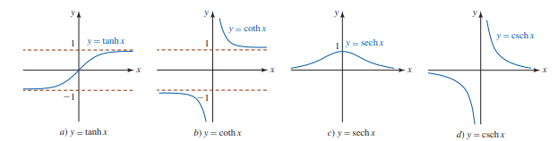
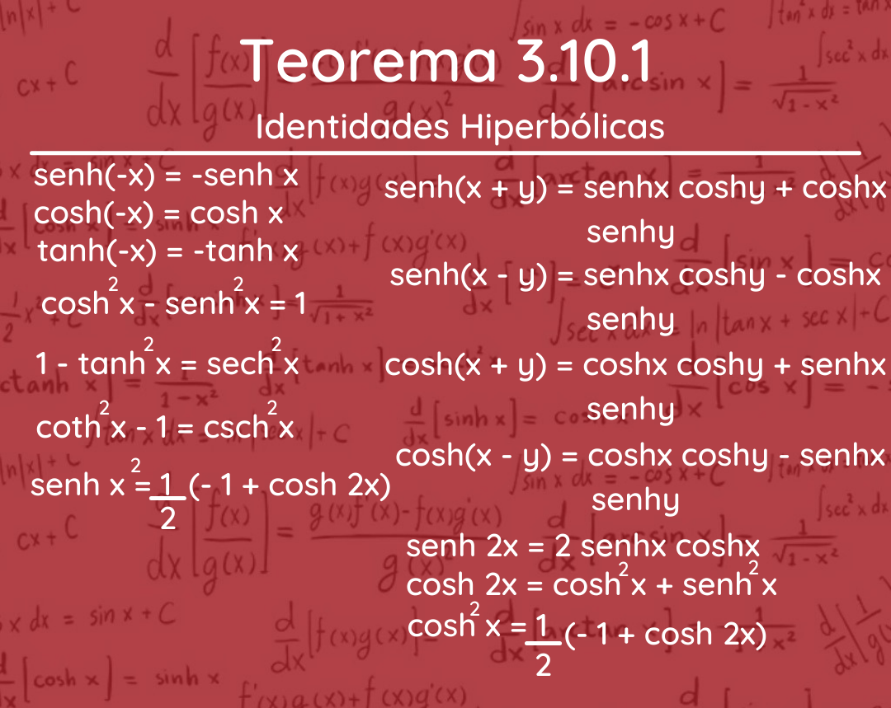
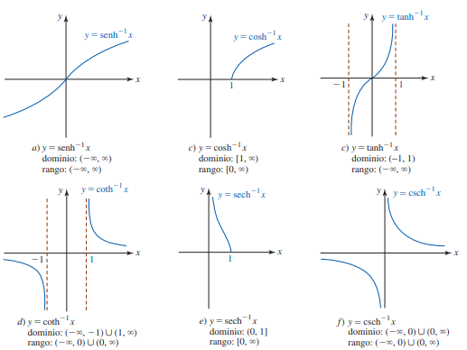
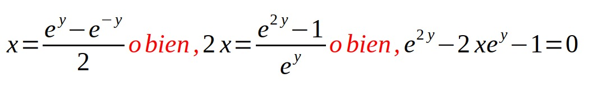
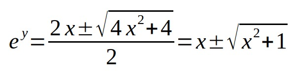

3.10 Hiperbólicas
Las funciones hiperbólicas son un conjunto de funciones con definiciones y algunas propiedades que son semejantes al conjunto de funciones trigonométricas. Pero, las funciones hiperbólicas son funciones exponenciales y, por lo tanto, no son periódicas. Son útiles para describir fenómenos físicos (por ejemplo, velocidad de las olas o el movimiento de un objeto en un fluido) por su conveniencia al resolver ecuaciones diferenciales. Las funciones hiperbólicas fueron importantes para la Teoría de la Relatividad Especial de Einstein en las ecuaciones de transformación relacionadas a diferentes marcos de referencia. Además, algunas funciones hiperbólicas son útiles al describir la forma y características de la forma física de un cable de alta tensión, o de un collar, o la arquitectura de algunas estructuras conocidas.


Las gráficas del seno hiperbólico y del coseno hiperbólico se proporcionan a continuación:
Teorema 3.10.1
Teorema 3.10.2

3.10.1 Funciones Hiperbólicas Inversas
Las funciones hiperbólicas inversas son las funciones inversas de las funciones hiperbólicas. Las funciones hiperbólicas aparecen en los cálculos de ángulos y distancias en geometría hiperbólica.
Una función tiene una inversa si es
de uno a uno. Todas las funciones hiperbólicas excepto cos x son funciones de uno a uno y por lo tanto tienen una inversa. Como las funciones trigonométricas, una inversa se puede definir como cos x restringiendo su dominio para
que sea de uno a uno.


Devido a que la última ecuación es cuadrática en e y, la fórmula cuadrática proporciona
Luego, es necesario rechazar la solución correspondiente al signo menos en por que e y > 0 pero x - √ x 2+ 1 0. Así tenemos:
e y = x + √ x 2 + 1 o bien,

Teorema 3.10.4